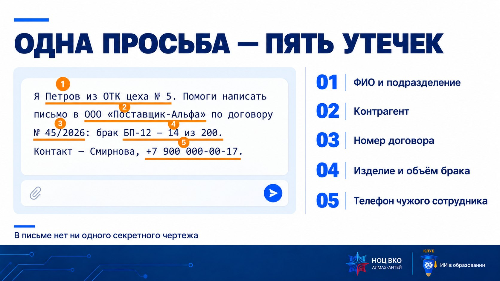
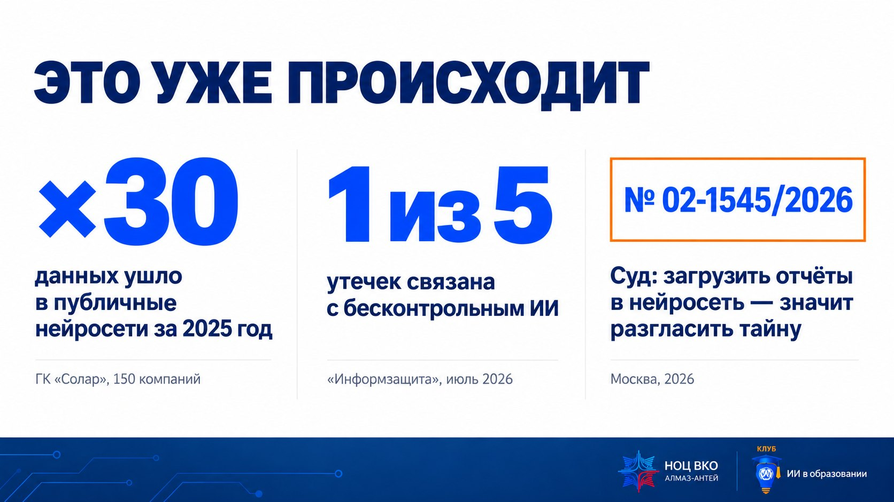
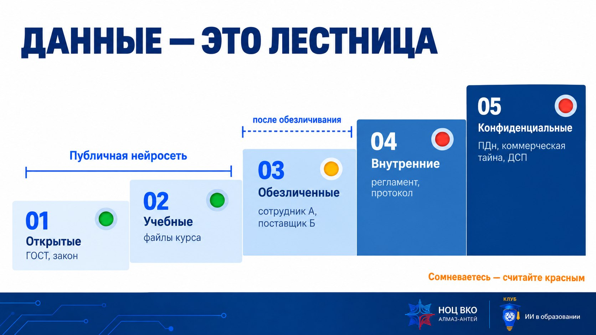
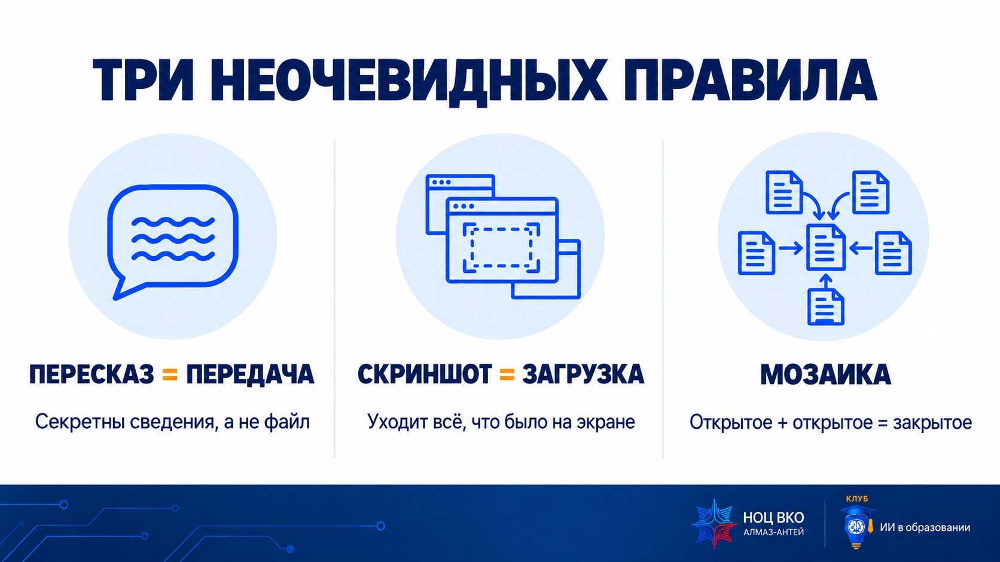
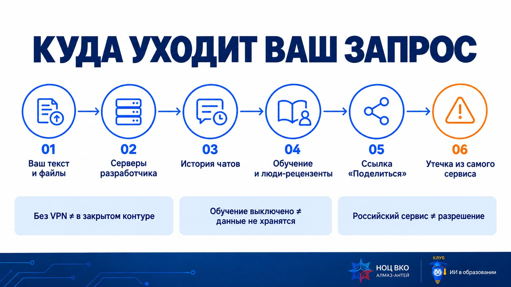
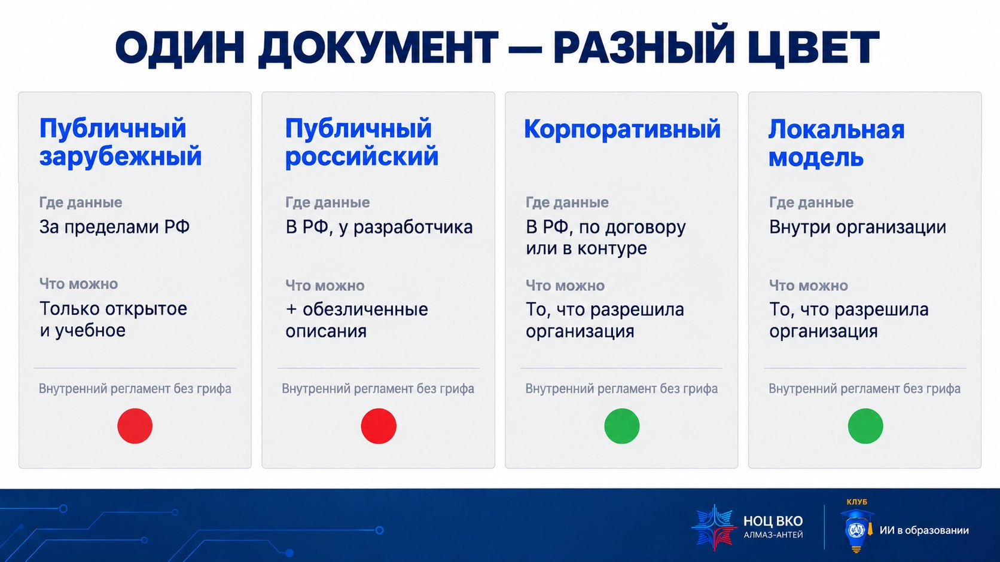
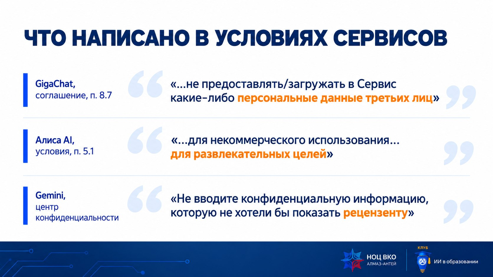
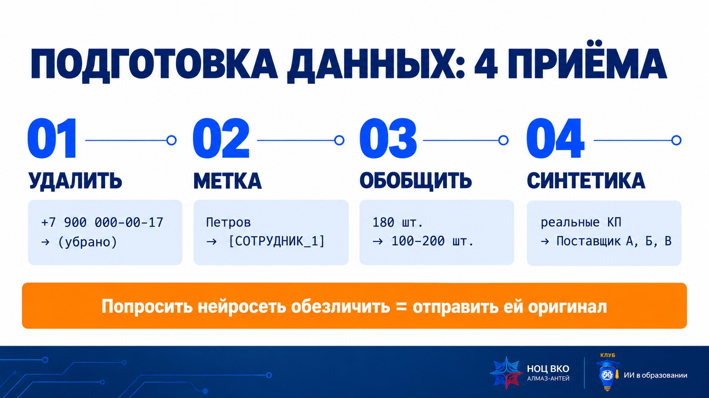
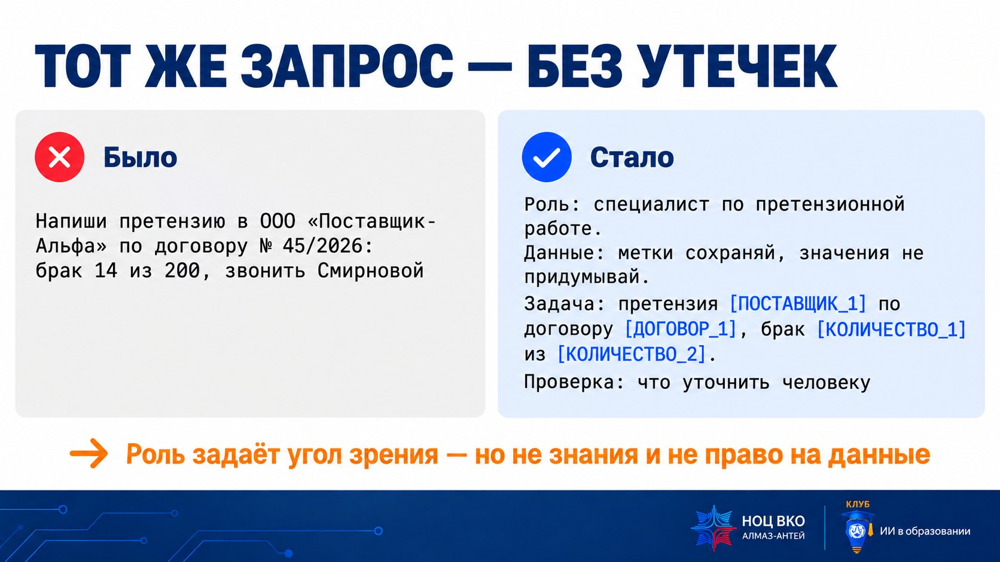
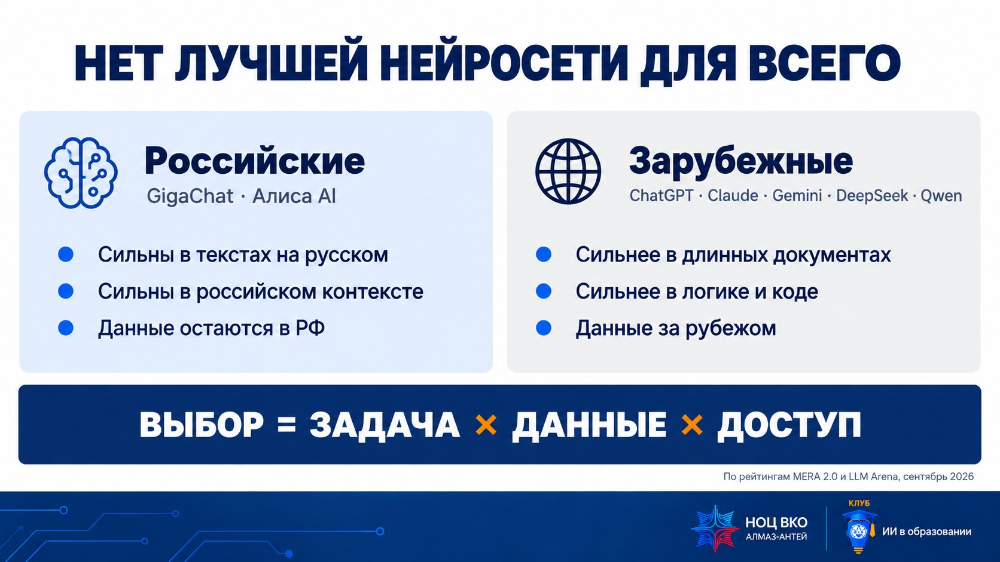

Вход: одна просьба — пять утечек
Утечка редко выглядит как «слил секретный документ». Обычно это вежливая просьба помочь с письмом, в которую вставили лишнее.

На экране — сообщение в бесплатную нейросеть.
Привет! Я Петров из ОТК цеха № 5. Помоги написать письмо в ООО «Поставщик-Альфа» по договору № 45/2026: в партии блоков питания БП-12 брак — 14 штук из 200. Контакт у них — Смирнова, +7 900 000-00-17. Надо жёстко, но вежливо.
🔒 Правило данныхВо внешние нейросети — только открытые сведения, учебные файлы курса и обезличенные описания задач. Политика информационной безопасности Концерна ВКО «Алмаз – Антей» и локальные акты вашего предприятия важнее этого урока. Сомневаетесь — считайте данные «красными».
Разбор: пять утечек сначала подумайте сами
- ФИО и подразделение автора — «Петров из ОТК цеха № 5».
- Контрагент — ООО «Поставщик-Альфа».
- Номер договора — № 45/2026.
- Изделие и объём брака — БП-12, 14 из 200: сведения о качестве поставок.
- ФИО и телефон человека из другой организации — персональные данные третьего лица.
«Что мне будет?» Это уже происходит
В России уже есть судебное решение: загрузить рабочие отчёты в публичную нейросеть — значит разгласить коммерческую тайну.

Директор по продажам московской компании загружала в DeepSeek внутренние отчёты о сделках, поступлениях денег и финансовых показателях отделов и пересылала переписку на личную почту. Её уволили за разглашение охраняемой законом тайны (ТК РФ, ст. 81, п. 6, пп. «в»). Суд признал увольнение законным: выгрузка сведений, составляющих коммерческую тайну, в нейросеть — это их разглашение. Доказывать, что данные кто-то прочитал, не понадобилось.
Дело № 02-1545/2026 · Бабушкинский районный суд Москвы · по сообщениям Право.ру и РАПСИ, 27.07.2026×30
Во столько раз за 2025 год вырос объём данных, которые сотрудники российских компаний отправили в публичные нейросети. Анализ трафика 150 компаний, ГК «Солар».
1 из 5
Столько организаций, столкнувшихся с утечками в июле 2026 года, связали их с несанкционированным использованием ИИ; годом ранее — около 12%. «Информзащита».
Вопрос для размышления
- Почему суду не понадобилось доказывать, что кто-то эти отчёты прочитал?
Разбор сначала подумайте сами
Разглашение — это когда информация стала доступна третьим лицам без согласия обладателя. Оператор сервиса — третье лицо, отчёты оказались на его серверах.
Тема 1. Какие бывают данные
Данные — это лестница из пяти ступеней. Чем выше ступень, тем меньше мест, куда их можно отправить. Для публичной нейросети открыты только две нижние, третья — после обезличивания.

💡 Метафора: проходная предприятия
Открытые сведения — рекламный буклет на стойке у входа: его берёт кто угодно. Учебные — плакат в учебном классе. Обезличенные — фото цеха, где закрыли номера и лица. Внутренние — то, что лежит за проходной. Конфиденциальные — за второй дверью с доступом по списку. Публичная нейросеть — посетитель, который не прошёл проходную.
| Ступень | Что это | Пример | В публичную нейросеть |
|---|---|---|---|
| 1. Открытые | Официально опубликовано | ГОСТ, закон, пресс-релиз | 🟢 Можно |
| 2. Учебные | Придуманы для обучения и тренировки | Файлы курса | 🟢 Можно |
| 3. Обезличенные | Нельзя понять, о ком и о чём речь, без дополнительной информации | «Сотрудник А сорвал срок поставщику Б» | 🟡 Если разрешают правила организации |
| 4. Внутренние | Для работы внутри организации, без грифа | Регламент, протокол планёрки, переписка | 🛑 Нельзя |
| 5. Конфиденциальные | Охраняются законом или режимом | Персональные данные (152-ФЗ), коммерческая тайна (98-ФЗ), служебная информация ограниченного распространения (ДСП) | 🛑 Нельзя |
Сведения режимного характера, ТТХ изделий и конструкторская документация в контексте ИИ-сервисов не обсуждаются вообще.
Персональные данные — это не только паспорт
По 152-ФЗ персональные данные — «любая информация, относящаяся к прямо или косвенно определенному или определяемому физическому лицу». ФИО с должностью, табельный номер, фото, голос и даже «единственный главный технолог цеха № 5» — это персональные данные.

Проверьте себя: к какой ступени относится?
- Опубликованный на сайте Росстандарта ГОСТ
- График отпусков отдела
- Презентация для заказчика с ценами
Ответы сначала подумайте сами
- ГОСТ с сайта Росстандарта — ступень 1, открытые.
- График отпусков — ступень 5: персональные данные.
- Презентация с ценами — ступень 5: коммерческая тайна.
Золотое правило: сомневаетесь — считайте красным.
Куда уходит запрос и что написано в условиях
Нажать «Отправить» — значит передать текст компании, которой принадлежит сервис. Что она с ним делает, написано в условиях, которые почти никто не читает.

💡 Метафора: пропуск на завод для водителя доставки
Российская служба доставки или зарубежная — водитель всё равно посторонний. Отличается только юрисдикция его компании. Корпоративная модель в закрытом контуре — свой водитель предприятия, которому разрешено ездить по территории.


| Сервис | Где данные | Из условий и справки | Доступ из РФ |
|---|---|---|---|
| GigaChat | РФ | Соглашение для физлиц, п. 8.7: «Клиент обязуется не предоставлять/загружать в Сервис какие-либо персональные данные третьих лиц…»; п. 2.4: бесплатный режим — «исключительно в личных некоммерческих целях». Справка: «ГигаЧат может ошибаться — проверяйте его ответы»; после кнопки «Поделиться» часть диалога могут увидеть другие | Без VPN |
| Алиса AI | РФ | Условия от 10.09.2026, п. 5.1: сервис предоставляется «исключительно для некоммерческого использования Пользователем в домашних условиях в ограниченном кругу людей для развлекательных целей»; п. 4.3: запрос и загружаемые файлы — по безотзывной лицензии Яндексу; п. 6.6: от участия в улучшении можно отказаться в Яндекс ID | Без VPN |
| Qwen | Сингапур, КНР | Политика конфиденциальности: данные хранятся и обрабатываются в Сингапуре и материковом Китае; срок хранения диалогов не опубликован | Обычно без VPN, без гарантии |
| ChatGPT | США | Справка OpenAI: у бесплатного и личных платных тарифов диалоги по умолчанию используются для обучения, это отключается в Settings → Data Controls; Temporary Chat удаляется через 30 дней | РФ официально не поддерживается |
| DeepSeek | КНР | Политика от 10.02.2026: данные собираются, обрабатываются и хранятся в КНР. В январе 2025 года исследователи Wiz нашли открытую базу DeepSeek с историей чатов | Обычно без VPN, без гарантии |
| Gemini | США | Центр конфиденциальности: не вводите конфиденциальную информацию, которую не хотели бы показать рецензенту; просмотренные рецензентами диалоги хранятся до 3 лет | РФ нет в списке регионов |
Инцидент, который запоминается
Летом 2025 года переписки ChatGPT, Grok и Claude, открытые кнопкой «Поделиться», нашлись в поиске Google. Только у Grok в поиске оказалось больше 370 тысяч диалогов. Кнопка «Поделиться» делает диалог публичной страницей.
Главное сначала подумайте сами
- Российский сервис ≠ разрешение. Он решает вопрос юрисдикции, но не тайны.
- Выключенное обучение ≠ данные не хранятся.
- «Без VPN» ≠ «в закрытом контуре». Веб-чаты российских сервисов — облачные.
- Для рабочих документов — корпоративный инструмент, который разрешила организация.
Практикум «Светофор данных 2.0»
В уроке 1 светофор был простым: чертёж — красный, ГОСТ — зелёный. Сегодня карточки с подвохом: цвет зависит не только от данных, но и от того, куда вы их несёте.
Главное сначала подумайте сами
- Передача — это не только файл: пересказ, скриншот, фото, диктовка голосом.
- Цвет определяет пара «данные × инструмент».
- Открытое + открытое может дать закрытое — мозаика.
- Сомнение — красный.
Тема 2. Подготовка данных: минимум и четыре приёма
Сначала спросите себя, нужны ли ИИ эти данные вообще. Если нужны — отправьте минимум и в таком виде, чтобы посторонний не понял, о ком и о чём речь.

💡 Метафора: консультация у стороннего специалиста
Вы спрашиваете знакомого юриста: «Что проверить в договоре поставки, если поставщик сорвал сроки?» — а не отправляете ему договор с реквизитами. Ответ получите почти такой же.
| Приём | Как | Пример | Метод из приказа |
|---|---|---|---|
| Удалить | Убрать всё, что не нужно для задачи | Телефон представителя поставщика для письма не нужен | — |
| Метка | Заменить на [СОТРУДНИК_1], [ПОСТАВЩИК_1]; таблицу соответствия держать у себя | «Петров» → [СОТРУДНИК_1] | Введение идентификаторов |
| Обобщить | Точное → диапазон, категория, регион | «180 шт.» → «100–200 шт.»; «15.03.1987» → «1987» | Изменение состава или семантики, агрегирование |
| Синтетика | Отладить решение на выдуманных данных той же структуры | Таблица «Поставщик А, Б, В» для отладки формул | — |
⚠️ Главная ловушка: «попрошу нейросеть обезличить документ»Чтобы нейросеть обезличила, ей нужно отправить оригинал — утечка уже произошла. Обезличиваем у себя: «Найти и заменить» в Word, «Инспектор документов», учебный обезличиватель ниже — он работает в браузере без отправки текста.
Попробуйте: «Найти автоматически» → шаг 2 → шаг 3. Обратите внимание: фразу «единственном в отрасли стенде» автоматика не нашла — её видит только человек. А в ответе ИИ одна метка «укорочена», и обратная подстановка её не найдёт.
| Где | Что остаётся | Как убрать |
|---|---|---|
| Имя файла | Фамилия, изделие, цех | Переименовать или вставлять текст вместо файла |
| Свойства Word | Автор, организация, кто последним изменял | Файл → Сведения → Поиск проблем → Проверить документ → Удалить всё |
| Примечания и исправления | Реплики рецензентов, удалённый текст | Рецензирование → удалить примечания; принять или отклонить исправления |
| Excel | Скрытые листы и столбцы, примечания | Инспектор документов; скопировать нужный диапазон значениями в новый файл |
| Скриншот, фото | Почта, вкладки, путь к папке, фон | Обрезать до нужного фрагмента |
| Сервис | История | Обучение на диалогах | Ссылки «Поделиться» |
|---|---|---|---|
| GigaChat | «Все чаты», удаление через «три точки» | В найденной справке не описано — считайте, что запросы хранятся у разработчика | Настройки → «Управление ссылками» |
| Алиса AI | В диалоге: «три точки» → «Очистить историю» | Яндекс ID → «Данные» → отказ от участия в улучшении | Проверить опубликованные ответы |
| ChatGPT | Боковая панель | Settings → Data Controls → Improve the model for everyone | Settings → Data Controls → Shared links |
| Qwen, DeepSeek | Боковая панель | Проверить в настройках аккаунта; DeepSeek по политике даёт право отказаться | Проверить опубликованные ссылки |
Промпты для подготовки данных P02, P04, P07
правило минимума.
Я хочу [задача в общих словах, например: подготовить краткую справку для руководителя по итогам испытаний оборудования]. Не проси присылать документы целиком. Сначала перечисли, какие сведения тебе минимально нужны для качественного результата. Для каждого сведения укажи: можно ли заменить его меткой, диапазоном или категорией — и что потеряется, если заменить.
чтобы тренироваться или отлаживать формулы без настоящих цифр.
Создай учебную таблицу из [15] строк со столбцами: [названия столбцов в общих словах, например: «Позиция», «Поставщик (условный)», «Цена за единицу, руб.», «Срок поставки, дней», «Гарантия, мес.»]. Значения — вымышленные и правдоподобные, не относящиеся к реальным организациям и изделиям. Поставщиков называй «Поставщик А», «Поставщик Б»… Добавь 2 строки с намеренными ошибками для тренировки проверки. Отдельно после таблицы укажи, где они.
Ты — [роль]. Сведения в запросе обобщены: вместо точных значений даны диапазоны и категории (например, «партия 100–150 шт.», «крупный региональный центр», «срок — до месяца»). Работай с обобщёнными значениями и не пытайся угадать точные. Если для вывода точность критична — прямо напиши, какое значение и с какой точностью человеку нужно подставить самостоятельно. Задача: [что сделать].
Практикум «Что можно загрузить в ИИ?» Найдите 12 идентификаторов
Обычная служебная записка о браке. Задача — найти всё, что нужно убрать или заменить, прежде чем просить нейросеть написать претензию. Три идентификатора в тексте не видны.
Разбор: 12 идентификаторов сначала подумайте сами
| № | Где | Что | Приём |
|---|---|---|---|
| 1 | Имя файла | Фамилия автора, изделие, цех | Переименовать или вставлять текст |
| 2 | Свойства файла | Автор и организация | Инспектор документов |
| 3 | Примечание рецензента | «По НА-2 не писать — это для заказчика К.» | Удалить примечания |
| 4 | Шапка | ФИО и должность адресата | Метка или удалить |
| 5 | Шапка, подпись | ФИО автора | [СОТРУДНИК_1] |
| 6 | Шапка, подпись | Подразделение «ОТК цеха № 5» | Удалить |
| 7 | Заголовок | Номер и дата записки | [НОМЕР_1], [ДАТА_1] |
| 8 | Текст | Номер договора | [ДОГОВОР_1] |
| 9 | Текст | Контрагент | [ПОСТАВЩИК_1] |
| 10 | Текст | Комплектующее и объём партии | [КОМПЛЕКТУЮЩЕЕ_1], [КОЛИЧЕСТВО_1] из [КОЛИЧЕСТВО_2] |
| 11 | Текст | ФИО и телефон представителя поставщика — ПДн третьего лица | Удалить: для письма не нужны |
| 12 | Подпись | Адрес почты | Удалить |
Вывод: три скрытых идентификатора находит меньшинство. Вставка текста вместо файла или пересоздание документа убирает скрытое разом.
Эксперимент «Метки»: один промпт в разных моделях
Данные подготовлены правильно. Проверьте, как с ними обращаются разные модели: сохранят ли метки или «помогут» и додумают. Скопируйте промпт в GigaChat, Алису AI или Qwen и отметьте результат в табло.
Ты — специалист по претензионной работе промышленного предприятия: вежливый, но твёрдый тон, без обещаний и условий, которых нет в тексте. В тексте ниже реальные имена, организации, номера документов и количества заменены метками вида [СОТРУДНИК_1], [ПОСТАВЩИК_1], [ДОГОВОР_1], [КОЛИЧЕСТВО_1]. Правила: 1) каждую метку сохраняй символ в символ; 2) не придумывай значения для меток; 3) не добавляй новых дат, сумм, сроков и условий. Задача: составь черновик претензии поставщику. Текст: Служебная записка [НОМЕР_1] от [ДАТА_1]. При входном контроле партии [КОМПЛЕКТУЮЩЕЕ_1], поставленной по договору [ДОГОВОР_1] с [ПОСТАВЩИК_1], выявлены несоответствующие изделия: [КОЛИЧЕСТВО_1] из [КОЛИЧЕСТВО_2]. Изделия не выдерживают проверку выходного напряжения под нагрузкой. Требуется претензия поставщику: замена несоответствующих изделий в срок [СРОК_1] и предложение составить совместный акт. Автор: [СОТРУДНИК_1].
| Что проверяем | GigaChat | Алиса AI | Qwen | ChatGPT |
|---|---|---|---|---|
| Все метки на месте, ни одна не изменена | ||||
| Нет выдуманных сроков и дат | ||||
| Нет условий договора, которых не было в тексте | ||||
| Не восстановлены убранные детали — должность, подразделение |
Типичный ответ ИИ на этот промпт пример с тремя ошибками — найдите их
УЧЕБНЫЙ МАТЕРИАЛ · СИНТЕТИЧЕСКИЕ ДАННЫЕ · не относятся к реальному предприятию Урок 3 · демонстрация «Метки» Типичный ответ ИИ на демонстрационный промпт — заготовлен для показа, если сервис недоступен или модель ответила иначе. ПРЕТЕНЗИЯ Руководителю [ПОСТАВЩИК_1] Уважаемые коллеги! При входном контроле партии [КОМПЛЕКТУЮЩЕЕ_1], поставленной по договору [ДОГОВОР_1], выявлены несоответствующие изделия в количестве [КОЛИЧЕСТВО_1] из [КОЛИЧЕСТВО_2]: изделия не выдерживают проверку выходного напряжения под нагрузкой. Просим в течение 10 рабочих дней заменить несоответствующие изделия на изделия надлежащего качества. В соответствии с п. 7.2 договора за нарушение сроков замены поставщик уплачивает неустойку в размере 0,1 % от стоимости партии за каждый день просрочки. Предлагаем составить совместный акт о выявленных несоответствиях с участием представителя [ПОСТАВЩИК_1]. С уважением, [СОТРУДНИК_1] инженер ОТК
- «в течение 10 рабочих дней» — метка [СРОК_1] пропала, срок выдуман. Вернуть метку: срок подставит человек.
- «В соответствии с п. 7.2 договора за нарушение сроков замены поставщик уплачивает неустойку в размере 0,1 %…» — условия договора, которого не было в тексте. Отправив такую претензию, предприятие сошлётся на несуществующий пункт.
- «инженер ОТК» — модель восстановила должность, которую мы убрали: догадка по контексту.
Промпт P19 «Самопроверка» если опережаете: сколько из трёх ошибок модель найдёт сама
связь с уроком 2.
Проверь свой предыдущий ответ. 1) Какие утверждения не опираются на текст, который я дал? Выпиши их. 2) Какие даты, числа, названия и ссылки ты добавил сам? 3) Какие метки в квадратных скобках изменены или пропали? Формат: таблица «Фрагмент · Проблема · Что сделать». Ничего не исправляй, пока я не подтвержу.
Обычно самопроверка находит одну-две проблемы из трёх — хорошая иллюстрация, что самопроверка ИИ не заменяет человека.
Вывод сначала подумайте сами
Мы всё сделали правильно, а модель всё равно вернула должность, которую мы убрали, и добавила условия. Разные модели ошибаются по-разному — ни одна не гарантирует аккуратности.
Вывод: обезличивание проверяют дважды — в запросе и в ответе. Метки возвращаем на место у себя в документе, а не в чате.
Роль в промпте: угол зрения, а не знания
Роль задаёт угол зрения, критерии и тон. Она не добавляет знаний, не даёт права на данные и не переносит на ИИ ответственность. Подробно промпты разбираем в разделе 3.

💡 Метафора: бейдж на конференции
Надпись «эксперт» на бейдже не делает человека экспертом, но подсказывает, какие вопросы ему задавать и каких ответов ждать. В исследовании Zheng и соавторов (EMNLP 2024) 162 роли на 2 410 фактических вопросах не повысили точность ответов.
универсальный каркас, продолжение MEGA-промпта из урока 1.
Роль: Ты — [роль с критериями, например: редактор деловой переписки промышленного предприятия]. Контекст: [ситуация в общих словах, без названий изделий, объектов, организаций и людей]. Данные: имена, организации, номера и суммы заменены метками вида [СОТРУДНИК_1], [ОРГАНИЗАЦИЯ_1], [СУММА_1]. Сохраняй метки без изменений и не подставляй вместо них реальные или правдоподобные значения. Задача: [что сделать]. Ограничения: не добавляй фактов, дат, сроков и условий, которых нет в тексте. Если сведений не хватает — задай вопрос, а не додумывай. Формат: [таблица / список / черновик письма объёмом до … слов]. Проверка: в конце отдельным списком перечисли места, которые человек должен проверить перед использованием.
Промпты с ролями P08, P09, P10 — для самостоятельной работы
Ты — редактор деловой переписки промышленного предприятия. Твоя задача — стиль, ясность и структура, а не содержание. Отредактируй текст: убери канцелярит и повторы, сделай тон вежливым и деловым, сохрани все факты и все метки в квадратных скобках без изменений. Не добавляй новых фактов. Формат: исправленный текст, затем список правок из 3–5 пунктов. Текст: [ОБЕЗЛИЧЕННЫЙ ТЕКСТ]
роль ИИ «консультант».
Ты — опытный наставник-инженер. Я решаю задачу сам, ты помогаешь думать. Задача в общих словах: [например: проверить чужой расчёт грузоподъёмного приспособления перед подписью]. Составь план проверки: какие исходные данные сверить, какие типовые ошибки поискать, какие нормативы открыть. Сам не считай, числа не предлагай, вывод «выдержит / не выдержит» не делай. Если я попрошу посчитать — напомни, что это решает специалист.
Ты — придирчивый оппонент на техническом совете. Факты не придумывай и не проверяй — оценивай логику и полноту. Прочитай черновик и назови 5 самых слабых мест: где вывод не следует из данных, чего не хватает, какие вопросы зададут первыми. Формат: таблица «Фрагмент · Слабое место · Вопрос, который зададут · Что добавить». Черновик: [ОБЕЗЛИЧЕННЫЙ ТЕКСТ]
Ответ к заданию 1 сначала подумайте сами
Б — «специалист по претензионной работе: вежливый, но твёрдый тон, без обещаний сроков, которых нет в фактах». А — всезнайка без критериев, В — подписант: «окончательную» претензию делает человек.
Роль в промпте согласуем с ролью ИИ в задаче из урока 2: консультанту — роль наставника, который не считает за вас.
Карта нейросетей: какие задачи какой модели
Нет лучшей нейросети «для всего». Выбор — это задача × данные × доступ. Подробный выбор инструмента — в разделе 6.

Попробуйте: задача «Письмо, записка» + «Обезличенное описание» → затем переключите на «Рабочий документ». Сила модели не меняется, а нижняя строка карточки становится красной у всех.
Возможность ≠ разрешение. Загрузка файла, поиск или генерация изображения не дают права передавать рабочие данные. Для реальных документов допустим только инструмент, разрешённый организацией; в публичные сервисы — открытые, учебные или корректно обезличенные данные.
| Сервис | В пользовательском чате | API и интеграции | Что можно анализировать | Что важно не перепутать |
|---|---|---|---|---|
| YandexGPT Алиса AI |
Алиса AI работает с текстами, документами и изображениями; может создавать и редактировать изображения, а также делать короткое видео из фото. | YandexGPT в AI Studio: генерация и классификация текста, токенизация, Function Calling для подключения внешних инструментов. | В Алисе AI — документы и изображения. YandexGPT API — прежде всего текстовая модель. | Алиса AI — готовый сервис, YandexGPT — семейство моделей и API. Возможность прикрепить документ не означает, что рабочий документ разрешено загружать. |
| GigaChat | Создание и редактирование текстов, помощь с кодом, генерация изображений. | API поддерживает работу с функциями для интеграций; встроенные функции — генерация изображений, работа с документами и создание 3D-моделей. | Текстовые документы, изображения и аудиофайлы — в рамках поддерживаемых форматов и лимитов API. | Вызов функции не является самостоятельным действием модели: она формирует параметры, а внешняя система выполняет операцию. Права, проверка результата и данные остаются на стороне организации. |
| DeepSeek | Чат, история, поиск в интернете, режим DeepThink, загрузка файлов и извлечение текста. | Текстовые модели, рассуждения и вызов внешних функций. DeepSeek Flash принимает изображения вместе с текстом. | В приложении — файлы для извлечения текста; в API — изображения JPEG, PNG, GIF и WebP. | Нельзя считать аудио, видео или любые документы универсально поддерживаемым вводом во всех режимах. Возможности чата и API различаются. |
Функции меняются вместе с тарифом, регионом, версией модели и настройками организации. Перед рабочим применением проверяем: категорию данных → разрешённый контур → нужную функцию → условия хранения и обработки. Источники: Алиса AI, Yandex AI Studio, GigaChat API, форматы GigaChat, DeepSeek App, DeepSeek Vision.
MERA 2.0 · русскоязычный бенчмарк
Лидеры: Gemini 3.7 Flash, GPT 5.6 Sol, Claude Opus 5. Лучший российский результат — GigaChat 3.5 Reasoning: 13-е место из 39 и 7-е в группе «Российский контекст». Модели решают закрытый набор задач через API. mera.a-ai.ru, выгрузка 15.09.2026.
LLM Arena · слепые голосования на русском
GigaChat 3.5 — 7-е место, рядом с GPT-5.2 и DeepSeek V3.2; Alice AI LLM — 19-е. 157 тысяч голосов, 112 моделей. «Нравится людям» ≠ «точно». llmarena.ru, обновление 13.09.2026.
Вопрос для размышления
- Для вашей самой частой задачи — какую модель вы бы выбрали и что меняет строка «Рабочие данные сюда»?
Три вывода сначала подумайте сами
- По силе мировые лидеры впереди, особенно в длинных документах, логике и коде. Российские — наравне в текстах на русском и сильнее в российском контексте.
- По данным для рабочих задач выбор делает не рейтинг, а правило данных: во внешние сервисы — только открытое, учебное и обезличенное.
- Для настоящих рабочих документов — только корпоративный инструмент, который разрешила организация. Если его нет, ИИ помогает с шаблоном, структурой и формулами, а данные вы подставляете сами.
Ты — специалист по документационному обеспечению. Составь шаблон [протокола совещания / служебной записки / выжимки отчёта на 1 страницу для руководителя]. Все сведения, которые зависят от конкретной ситуации, оформи полями в квадратных скобках с подсказкой, что туда вписать. Реальные сведения я заполню сам, без нейросети. Формат: готовый к копированию в Word текст.
Ты — аналитик, который строит модели сравнения в Excel. Помоги сделать лист сравнения [коммерческих предложений на оборудование] по критериям: [цена, срок поставки, гарантия, соответствие требованию ТЗ]. Веса критериев задаю я: [перечень весов]. Дай: структуру листа (какие столбцы), формулы для взвешенного балла и проверки требования ТЗ, условное форматирование. Реальные цены и названия я вставлю сам. Не придумывай примеры поставщиков с реальными названиями.
Итог, exit ticket и ДЗ-1
Три вопроса из четырёх мы разобрали. Четвёртый — кто проверит результат и отвечает за него — в следующем уроке, вместе с правом, дипфейками и мошенниками.
Что за данные? · Куда отправляю? · Как подготовил? · Кто проверит и отвечает — урок 4. Дальше — формула урока 2: задача → роль ИИ → результат → проверка → человек.
ДЗ-1 · «Паспорт безопасной задачи» · 40–50 минут
- Выберите одну свою рабочую задачу — подойдёт та, что описывали в уроке 2.
- Опишите её в общих словах: что за работа, но не над чем именно.
- Заполните в шаблоне поля ЧТО · КУДА · КАК. Не знаете, есть ли корпоративный ИИ, — пишите «уточнить у ИТ/ИБ».
- Подготовьте безопасную версию данных без нейросети: «Найти и заменить», свойства файла.
- Возьмите промпт P01–P07, запустите в разрешённом сервисе и запишите, что ИИ добавил от себя.
- Часть 2 · 15 минут: «Гигиена аккаунта» — второй лист шаблона.
Сдавать — через разрешённый в организации канал: корпоративная почта или учебная система, не личные мессенджеры. В карточке не должно быть ни одного реального названия, ФИО, номера и числа из рабочих документов.
Шаблон P03 «Работа с метками» основной шаблон ДЗ
Ты — [роль]. В тексте ниже реальные имена, организации, номера документов и суммы заменены метками вида [СОТРУДНИК_1], [ОРГАНИЗАЦИЯ_1], [ДОГОВОР_1], [СУММА_1]. Правила: 1) каждую метку сохраняй символ в символ; 2) не придумывай значения для меток; 3) не добавляй новых дат, сумм и условий. Задача: [что сделать с текстом]. Текст: [ОБЕЗЛИЧЕННЫЙ ТЕКСТ]
Что будет дальше
- Авторское право, дипфейки, фишинг и «если уже загрузил» — урок 4. Памятка 4 уже лежит в файлах.
- Конструкция промпта: цель, контекст, примеры, цепочки — раздел 3.
- Подробный выбор инструмента «задача — данные — инструмент — риски — контроль» — раздел 6.
- Внутренние правила конкретного предприятия — вопрос к службе информационной безопасности.
Памятки и файлы для скачивания
PDF — чтобы распечатать и повесить у рабочего места. DOCX — чтобы адаптировать под правила своего предприятия. Все учебные данные синтетические.
Чек-лист «Перед тем как нажать «Отправить»»
Пройдите перед каждым запросом с рабочими сведениями. Отметки сохраняются в вашем браузере.
Можно отправлять. Сомневаетесь хоть в одном пункте — считайте данные «красными».
Проверьте себя
Восемь вопросов с разбором. Правильный вариант подсвечивается после ответа — даже если вы ошиблись.
1. Инженер не загружал паспорт изделия, а пересказал характеристики своими словами и попросил нейросеть сравнить их с аналогами. Это допустимо?
2. Внутренний регламент без грифа нужно превратить в чек-лист. Что делает загрузку в публичный российский чат-бот допустимой?
3. Коллега предлагает: «Попросим нейросеть обезличить служебную записку, а потом поработаем с обезличенной». Что не так?
4. Вы удалили из текста служебной записки все ФИО. Где ваше ФИО может остаться?
5. Вы выключили в настройках сервиса использование диалогов для обучения. Что это значит?
6. Пять открытых новостей о поставщиках предприятия свели в одну таблицу «кто, что и когда поставляет». Почему это может стать закрытой информацией?
7. Для каких целей условия «Алисы AI» (п. 5.1) предоставляют сервис?
8. Промпт начинается словами «Ты — профессор, эксперт по договорам». Что это даёт?
Отвечено: 0 / 8
Что забрать с собой
- Утечка — это вежливая просьба с лишним. ФИО, контрагент, номер договора, объёмы и чужой телефон уходят вместе с просьбой о письме.
- Данные — лестница. В публичную нейросеть — только открытое и учебное; обезличенное — если разрешают правила организации.
- Передать можно не только файлом. Пересказ, скриншот, фото и мозаика из открытых кусочков — тоже передача.
- Российский сервис ≠ разрешение. Условия «Алисы AI» называют её сервисом для развлекательных целей, GigaChat запрещает ПДн третьих лиц, а суд признал загрузку отчётов разглашением.
- Готовим у себя и проверяем дважды. Минимум данных, четыре приёма, скрытое в файлах — до отправки; метки и додуманные детали — в ответе.
- Роль в промпте — угол зрения, а не права. Она не добавляет знаний и не разрешает данные.
- Выбор = задача × данные × доступ. Для рабочих документов решает не рейтинг, а разрешённый организацией инструмент.
Следующее занятие — урок 4: кто отвечает за результат ИИ, авторское право, дипфейки, фишинг и маршрут безопасной задачи целиком.